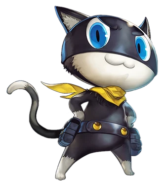

Phantom Thieves Roster
Joker
Leader of the Phantom Thieves.
Ryuji Sakamoto (Skull)
The rebellious ex-track star.

Morgana (Mona)
The mysterious feline companion.
Ann Takamaki (Panther)
The charming and passionate model.
Yusuke Kitagawa (Fox)
The artistic and eccentric prodigy.
Makoto Niijima (Queen)
The disciplined student council president.

Futaba Sakura (Oracle)
The brilliant but reclusive hacker.

Haru Okumura (Noir)
The kind-hearted heiress.

Goro Akechi (Crow)
The charismatic detective prince.